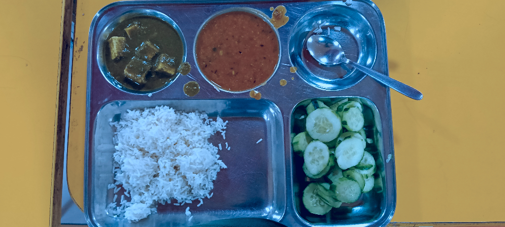
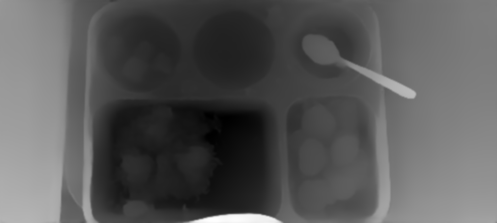
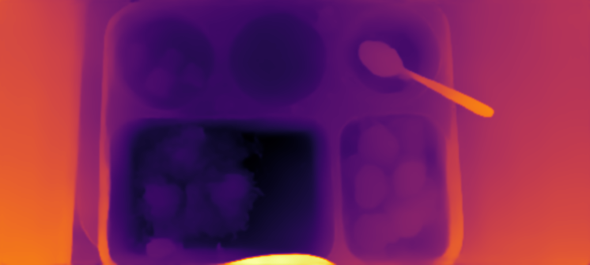
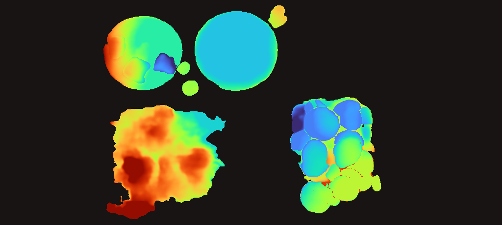
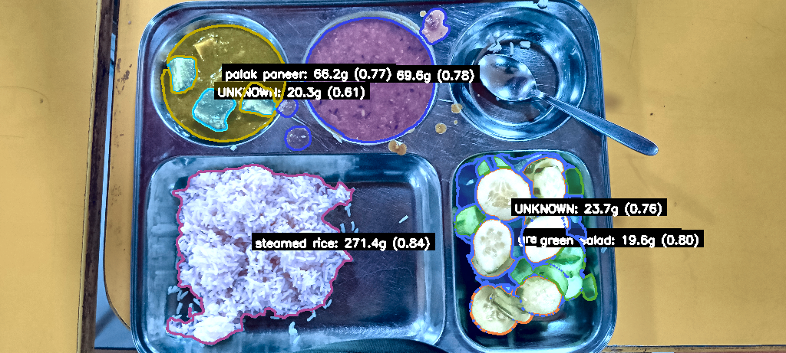

{
"resolution": "4080x1840",
"channels": 3,
"dtype": "uint8",
"expected_items": [
"chapati",
"green salad",
"palak paneer",
"steamed rice",
"cake",
"chutney",
"dal"
],
"plate_profile": "mess_tray_5comp",
"debug": true
}







[]
{
"item_id": "green salad_1",
"area_pixels": 19845,
"estimated_height_cm": 1.883,
"volume_estimate_ml": 67.7,
"density": 0.6,
"mass_g": 40.6,
"class_label": "green salad",
"class_confidence": 0.8426,
"depth_stability": 1.0,
"scale_confidence": 0.7,
"composite_confidence": 0.8396,
"prior_applied": true,
"diagnostics": {
"original_sam3_query": "cucumber",
"candidate_labels": [
"cucumber"
],
"menu_matching_result": "green salad",
"final_food_label": "green salad",
"confidence": 0.8426,
"uncertainty": 0.1574,
"original_mask_id": "mask_00",
"grouped_instance_id": "inst_1",
"fragment_count": 10,
"decision_reason": "FRAGMENT_GROUPED_10_PIECES"
},
"fragment_count": 1
}{
"item_id": "green salad_2",
"area_pixels": 6643,
"estimated_height_cm": 2.351,
"volume_estimate_ml": 32.6,
"density": 0.6,
"mass_g": 19.6,
"class_label": "green salad",
"class_confidence": 0.7678,
"depth_stability": 1.0,
"scale_confidence": 0.7,
"composite_confidence": 0.8015,
"prior_applied": true,
"diagnostics": {
"original_sam3_query": "sliced cucumber",
"candidate_labels": [
"sliced cucumber"
],
"menu_matching_result": "green salad",
"final_food_label": "green salad",
"confidence": 0.7678,
"uncertainty": 0.2322,
"original_mask_id": "mask_01",
"grouped_instance_id": "inst_2",
"fragment_count": 9,
"decision_reason": "FRAGMENT_GROUPED_9_PIECES"
},
"fragment_count": 1
}{
"item_id": "dal_3",
"area_pixels": 24394,
"estimated_height_cm": 1.794,
"volume_estimate_ml": 64.9,
"density": 1.072,
"mass_g": 69.6,
"class_label": "dal",
"class_confidence": 0.7277,
"depth_stability": 1.0,
"scale_confidence": 0.7,
"composite_confidence": 0.7803,
"prior_applied": true,
"diagnostics": {
"original_sam3_query": "dal tadka",
"candidate_labels": [
"dal tadka"
],
"menu_matching_result": "dal",
"final_food_label": "dal",
"confidence": 0.7277,
"uncertainty": 0.2723,
"original_mask_id": "mask_02",
"grouped_instance_id": "inst_3",
"fragment_count": 4,
"decision_reason": "FRAGMENT_GROUPED_4_PIECES"
},
"fragment_count": 1
}{
"item_id": "UNKNOWN_4",
"area_pixels": 4903,
"estimated_height_cm": 2.569,
"volume_estimate_ml": 20.3,
"density": 1.0,
"mass_g": 20.3,
"class_label": "UNKNOWN",
"class_confidence": 0.5098,
"depth_stability": 0.75,
"scale_confidence": 0.7,
"composite_confidence": 0.6078,
"prior_applied": false,
"diagnostics": {
"original_sam3_query": "food",
"candidate_labels": [
"food"
],
"menu_matching_result": null,
"final_food_label": "UNKNOWN",
"confidence": 0.5098,
"uncertainty": 0.4902,
"original_mask_id": "mask_03",
"grouped_instance_id": "inst_6",
"fragment_count": 3,
"decision_reason": "ABSTAINED_INSUFFICIENT_EVIDENCE"
},
"fragment_count": 1
}{
"item_id": "steamed rice_5",
"area_pixels": 39423,
"estimated_height_cm": 3.989,
"volume_estimate_ml": 262.8,
"density": 1.033,
"mass_g": 271.4,
"class_label": "steamed rice",
"class_confidence": 0.8433,
"depth_stability": 1.0,
"scale_confidence": 0.7,
"composite_confidence": 0.84,
"prior_applied": true,
"diagnostics": {
"original_sam3_query": "rice",
"candidate_labels": [
"rice"
],
"menu_matching_result": "steamed rice",
"final_food_label": "steamed rice",
"confidence": 0.8433,
"uncertainty": 0.1567,
"original_mask_id": "mask_04",
"grouped_instance_id": "inst_0",
"fragment_count": 1,
"decision_reason": "SINGLE_INSTANCE"
},
"fragment_count": 1
}{
"item_id": "palak paneer_6",
"area_pixels": 14212,
"estimated_height_cm": 2.651,
"volume_estimate_ml": 60.7,
"density": 1.09,
"mass_g": 66.2,
"class_label": "palak paneer",
"class_confidence": 0.7044,
"depth_stability": 1.0,
"scale_confidence": 0.7,
"composite_confidence": 0.7677,
"prior_applied": true,
"diagnostics": {
"original_sam3_query": "palak paneer",
"candidate_labels": [
"palak paneer"
],
"menu_matching_result": "palak paneer",
"final_food_label": "palak paneer",
"confidence": 0.7044,
"uncertainty": 0.2956,
"original_mask_id": "mask_05",
"grouped_instance_id": "inst_4",
"fragment_count": 1,
"decision_reason": "SINGLE_INSTANCE"
},
"fragment_count": 1
}{
"item_id": "UNKNOWN_7",
"area_pixels": 6102,
"estimated_height_cm": 2.407,
"volume_estimate_ml": 23.7,
"density": 1.0,
"mass_g": 23.7,
"class_label": "UNKNOWN",
"class_confidence": 0.7955,
"depth_stability": 0.75,
"scale_confidence": 0.7,
"composite_confidence": 0.7592,
"prior_applied": false,
"diagnostics": {
"original_sam3_query": "food",
"candidate_labels": [
"food"
],
"menu_matching_result": null,
"final_food_label": "UNKNOWN",
"confidence": 0.7955,
"uncertainty": 0.2045,
"original_mask_id": "mask_06",
"grouped_instance_id": "inst_5",
"fragment_count": 1,
"decision_reason": "ABSTAINED_INSUFFICIENT_EVIDENCE"
},
"fragment_count": 1
}

{
"food_items": [
{
"name": "green salad",
"volume_ml": 100.3,
"mass_g": 60.2,
"calories": 18.1,
"protein": 0.8,
"carbs": 2.8,
"fat": 0.4,
"confidence": 0.8396,
"class_label": "green salad",
"class_confidence": 0.8426,
"top_k": [
{
"label": "green salad",
"confidence": 0.8426,
"raw_similarity": 0.8426
}
],
"identification_status": "recognized",
"menu_match": true,
"matched_menu_item": "green salad",
"identification_confidence": 0.8426,
"segmentation_confidence": 0.8426,
"association_confidence": 1.0,
"menu_match_confidence": 1.0,
"depth_confidence": 1.0,
"scale_confidence": 0.7,
"diagnostics": {
"original_sam3_query": "cucumber",
"candidate_labels": [
"cucumber"
],
"menu_matching_result": "green salad",
"final_food_label": "green salad",
"confidence": 0.8426,
"uncertainty": 0.1574,
"original_mask_id": "mask_00",
"grouped_instance_id": "inst_1",
"fragment_count": 10,
"decision_reason": "FRAGMENT_GROUPED_10_PIECES"
},
"fragment_count": 1,
"food_name": "green salad",
"instance_count": 2
},
{
"name": "dal",
"volume_ml": 64.9,
"mass_g": 69.6,
"calories": 92.8,
"protein": 5.1,
"carbs": 13.9,
"fat": 1.9,
"confidence": 0.7803,
"class_label": "dal",
"class_confidence": 0.7277,
"top_k": [
{
"label": "dal",
"confidence": 0.7277,
"raw_similarity": 0.7277
}
],
"identification_status": "recognized",
"menu_match": true,
"matched_menu_item": "dal",
"identification_confidence": 0.7277,
"segmentation_confidence": 0.7277,
"association_confidence": 1.0,
"menu_match_confidence": 1.0,
"depth_confidence": 1.0,
"[
{
"step": "Input",
"message": "Original image saved",
"params": {
"resolution": "4080x1840"
},
"elapsed_s": 0.296,
"input_file": null,
"output_file": "original.png",
"timestamp": "2026-11-12T13:18:21.059622"
},
{
"step": "Pipeline",
"message": "Step 1 — Preprocessing & Perspective Warp",
"params": {},
"elapsed_s": null,
"input_file": null,
"output_file": null,
"timestamp": "2026-11-12T13:18:21.059622"
},
{
"step": "Quality Gate",
"message": "PASS",
"params": {
"blur_score": 111.85,
"tilt_deg": 3.0
},
"elapsed_s": null,
"input_file": null,
"output_file": null,
"timestamp": "2026-11-12T13:18:21.260419"
},
{
"step": "Preprocessing",
"message": "Resize applied",
"params": {
"original": "4080x1840",
"target_long_edge": 1024,
"scale": 0.251
},
"elapsed_s": 0.0008,
"input_file": null,
"output_file": "01_resized.png",
"timestamp": "2026-11-12T13:18:21.285453"
},
{
"step": "Preprocessing",
"message": "Gaussian blur applied",
"params": {
"kernel": 5
},
"elapsed_s": 0.0008,
"input_file": null,
"output_file": "02_denoised.png",
"timestamp": "2026-11-12T13:18:21.308753"
},
{
"step": "Preprocessing",
"message": "LAB color normalization applied",
"params": {},
"elapsed_s": 0.1366,
"input_file": null,
"output_file": "03_color_normalized.png",
"timestamp": "2026-11-12T13:18:21.470318"
},
{
"step": "Preprocessing",
"message": "CLAHE contrast enhancement applied",
"params": {
"clip_limit": 2.0,
"tile_grid": "8x8"
},
"elapsed_s": 0.0041,
"input_file": null,
"output_file": "04_contrast_enhanced.png",
"timestamp": "2026-11-12T13:18:21.499272"
},
{
"step": "Preprocessing",
"message": "Canny edge detection",
"params": {
"low": 50,
"high": 150
},
"elapsed_s": 0.0| Step | Message | Params | Time |
|---|---|---|---|
| Input | Original image saved | {"resolution": "4080x1840"} | 0.2960s |
| Pipeline | Step 1 — Preprocessing & Perspective Warp | — | — |
| Quality Gate | PASS | {"blur_score": 111.85, "tilt_deg": 3.0} | — |
| Preprocessing | Resize applied | {"original": "4080x1840", "target_long_edge": 1024, "scale": 0.251} | 0.0008s |
| Preprocessing | Gaussian blur applied | {"kernel": 5} | 0.0008s |
| Preprocessing | LAB color normalization applied | — | 0.1366s |
| Preprocessing | CLAHE contrast enhancement applied | {"clip_limit": 2.0, "tile_grid": "8x8"} | 0.0041s |
| Preprocessing | Canny edge detection | {"low": 50, "high": 150} | 0.0077s |
| Preprocessing | Warp skipped (no 4-pt contour) | {"warped": false} | — |
| Preprocessing | Complete | {"output_size": "1024x461"} | 0.4782s |
| Pipeline | Step 2 — Compartments & Scale | — | — |
| Compartment Detection | Detected 0 compartments | {"min_area_frac": 0.02, "max_area_frac": 0.9, "compartment_count": 0} | 0.0062s |
| Scale Calibration | Fallback to bbox-based calibration | {"cm_per_pixel": 0.04434, "method": "bbox"} | — |
| Compartment Detection | Scale computed | {"cm_per_pixel": 0.04434, "pixel_area_cm2": 0.00196573, "compartments": 0, "scale_confidence": 0.7} | 0.0424s |
| Pipeline | Step 3 — Depth Estimation | — | — |
| Depth Estimation | Depth Anything depth map computed (smoothed) | {"device": "cuda", "is_metric": true, "shape": [461, 1024], "min": -87.642, "max": -44.308} | 12.1436s |
| Depth Normalization | Surface normal plane subtracted from depth | {"baseline": -73.203, "fitted_plane": true, "is_metric": true} | 0.0353s |
| Depth Metric [cm] | Metric depth height in cm directly computed | {"cm_per_pixel": 0.04434, "min_cm": 0.0, "max_cm": 15.0, "mean_cm": 3.55} | 0.0015s |
| Depth Estimation | Complete | — | 12.2248s |
| Pipeline | Step 4–6 — SAM 3 Food Identification & Segmentation | — | — |
| SAM3 | Identified 7 food items (5 recognized, 0 unlisted, 0 uncertain) | — | 40.6029s |
| Pipeline | Step 7 — Volume & Mass Estimation | — | — |
| Volume Estimation | Computed mass for 7 items | {"total_items": 7} | 0.0233s |
| Pipeline | ✅ Pipeline complete | {"total_food_items": 7, "avg_confidence": 0.7709, "scale_method": "bbox"} | 53.7513s |